Префектура Тиба · Тиба · вино и сакэ
IMADEYA в Тибе: винный магазин, собственный погреб и десять японских вин на лето
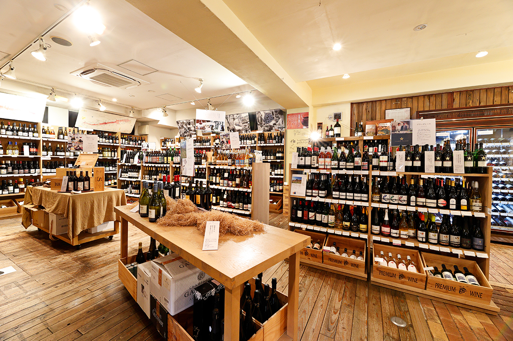
Девиз IMADEYA «Напитки это интересно», а в её главном магазине в городе Тиба легко найти необычное вино на каждый день. С 2023 года у компании есть и собственный погреб, где сакэ и вино годами ждут своего часа.
Магазин
Сакэ, вино и погреб почти на 20 000 бутылок
Главный магазин IMADEYA находится в городе Тиба, столице одноимённой префектуры. Компания работает под девизом «Напитки это интересно» и занимается самыми разными делами вокруг напитков, а в этом магазине можно найти яркое, непохожее на другие вино, которое делает обычный день немного праздничнее. По данным сайта компании (2026 год), здесь продают сакэ, вино и продукты, а стеллажи с бутылками стоят вдоль стен просторного зала.
В 2023 году IMADEYA открыла собственный погреб для выдержки IMADEYA AGING LABORATORY. В нём хранят почти 20 000 бутылок, прежде всего японское сакэ и японское вино. По данным сайта компании (2026 год), погреб устроен при главном магазине в Тибе.
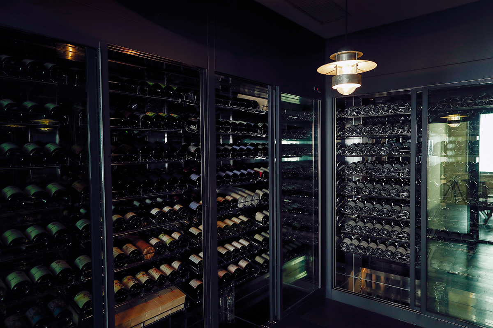
Когда напиток достигает своего лучшего возраста, его выпускают в продажу под маркой IMADEYA AGING. Такой вкус рождается за долгие годы, и попробовать его стоит хотя бы раз.
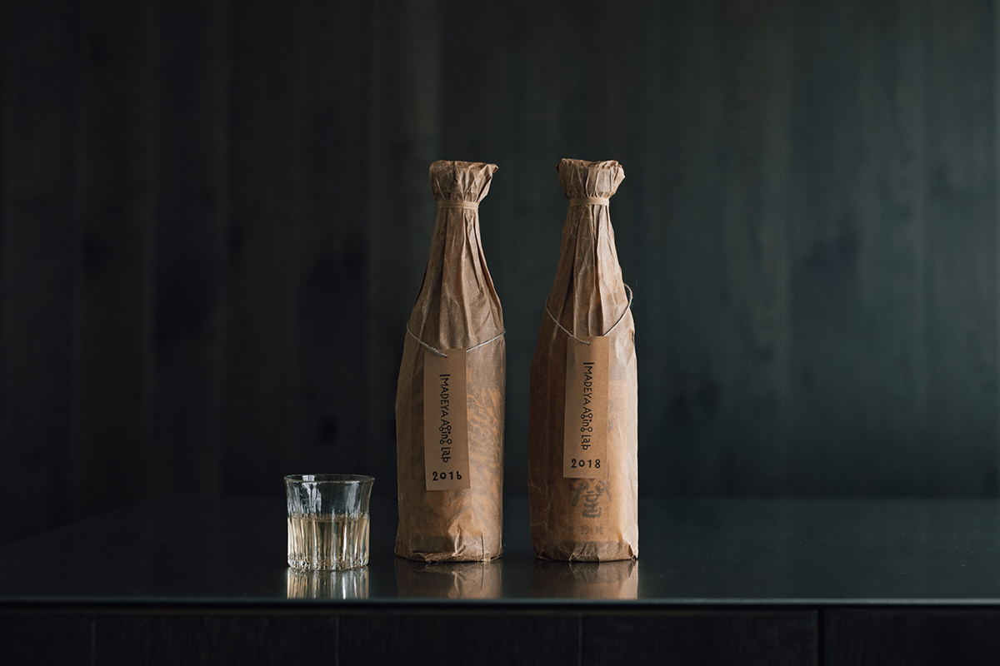
IMADEYA, главный магазин в Тибе
- Адрес
- префектура Тиба, Тиба, Тюо-ку, Нитона-тё, 714-4
- Телефон
- +81 570-015-111
- Часы работы
- 11:00–19:00
- Выходные
- среда (в последнюю среду месяца магазин открыт)
- Сайт
- imadeya.co.jp
Лето
Какое вино пить в жару
В последние годы в моде натуральные вина, а летом к тому же выбирают вина со свежей кислотностью, ярким ароматом и лёгким вкусом. Десять бутылок, которые магазин отобрал на лето 2024 года, как раз такие, и сомелье подтвердил, что это «главный вкус лета».
Белое и игристое вино обычно слегка охлаждают и пьют, пока раскрывается аромат. Фруктовое сладкое вино можно пить и со льдом. В моде и охлаждённое красное вино: холод делает послевкусие собраннее, и такое вино легко пить даже в жару.
«Летние вина чаще всего простые, такие, что можно взять с собой на барбекю. Пейте их без лишних церемоний»
сомелье
Подборка
Десять японских вин
Все десять вин японские, от Хоккайдо до Миядзаки на острове Кюсю. Цены ниже указаны по состоянию на 2024 год. Некоторые вина выпускают ограниченными партиями, поэтому их может уже не быть в продаже.
Розовое Sympa Rosé Terre de Yoichi 2022 делает Hirakawa Winery на Хоккайдо из винограда, выращенного в Ёити. Холодный климат острова даёт ароматное вино с живой, долгой кислотностью, и такое сочетание встречается редко. Белое «Ниагара» 2022 года винодельни «Ватанабэ будоэн дзёдзо» из префектуры Тотиги пахнет сладко, но на вкус сухое: крупные сочные ягоды сорта ниагара делают его лёгким для жаркого дня, а к блюдам с летними овощами и пряными травами оно подходит особенно хорошо.
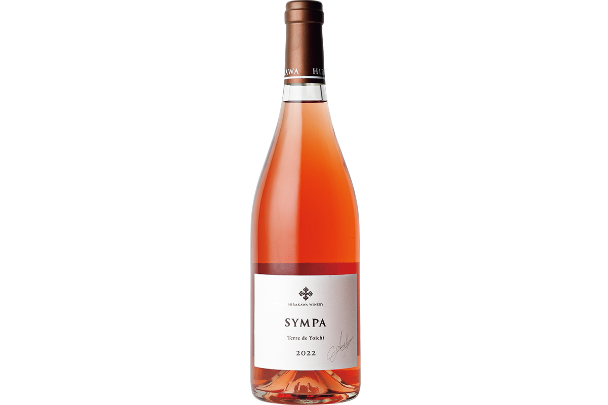
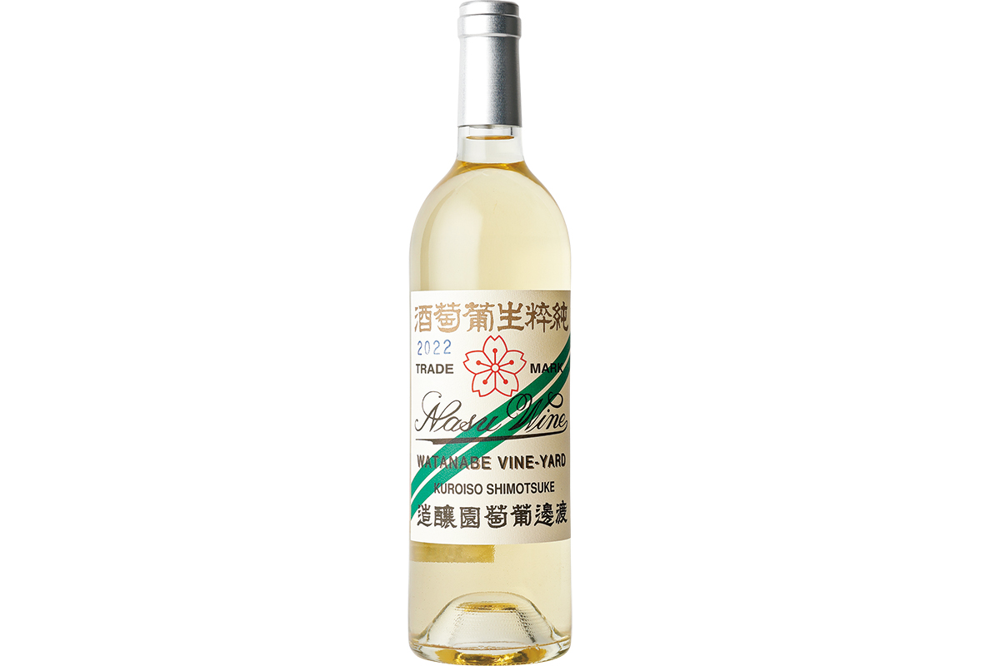
Белое Gruppetto Blanc 2022 из Яманаси сделано в основном из совиньон блана: горные виноградники дают свежую кислотность, аромат маракуйи и солоноватое послевкусие. Сухое белое O 2022 от OSA WINERY из Отару на Хоккайдо делают из столового сорта делавэр. У него чистая кислотность и невысокий градус, а к суши и морепродуктам оно подходит особенно хорошо.
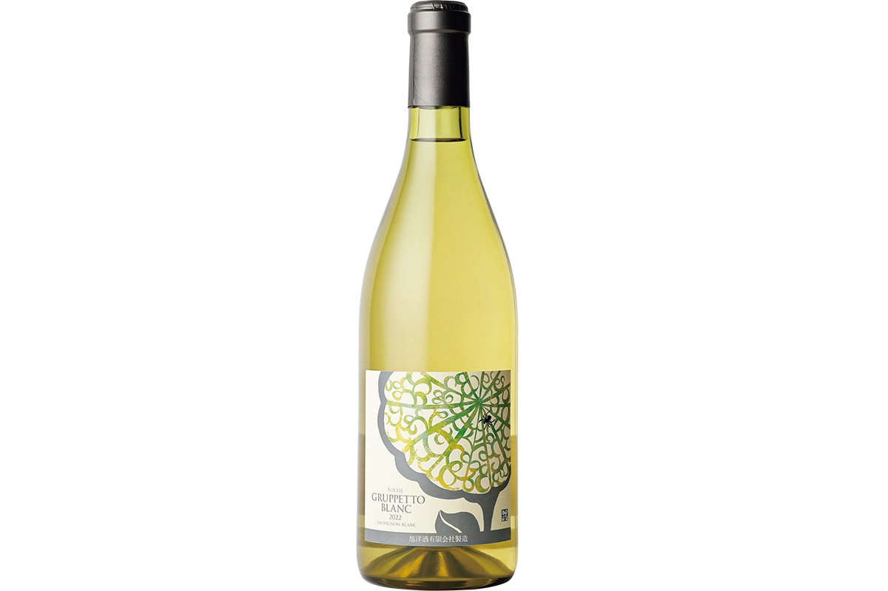
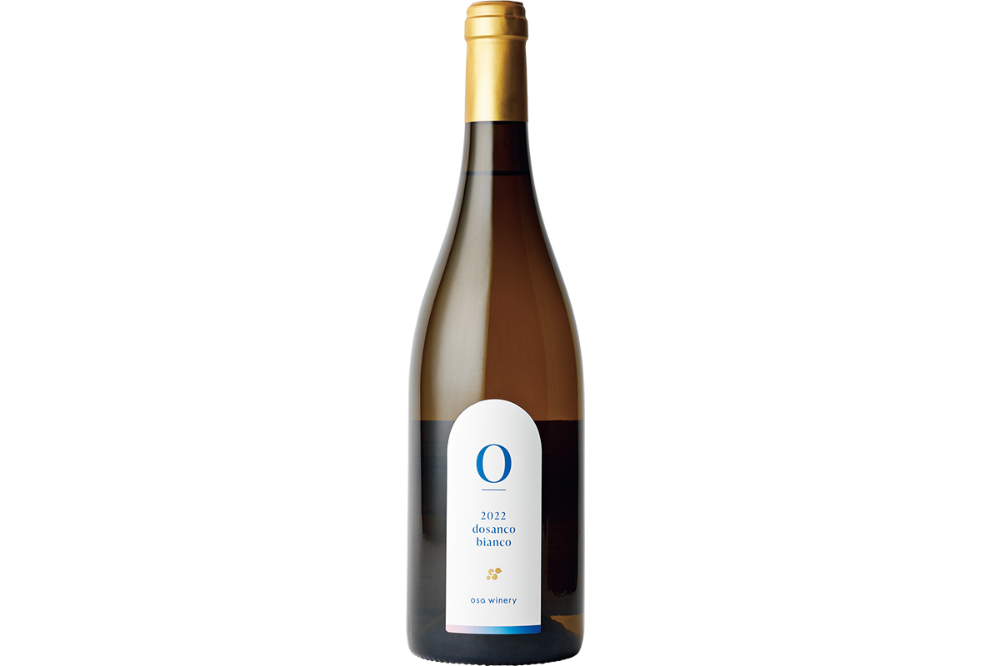
Среди игристых редкое KOSHU SPARKLING WINE 2022 от Seven Cedars Winery у озера Кавагути: тонкие пузырьки, спелый виноград сорта косю и чистая кислотность. «Яма-но петиан» 2022 года от Coco Farm & Winery сделано целиком из пти мансана. Это слабо игристое вино подходит даже к сытным блюдам, а если его хорошо охладить и понемногу смешивать с осадком, вкус становится чище и мягче.
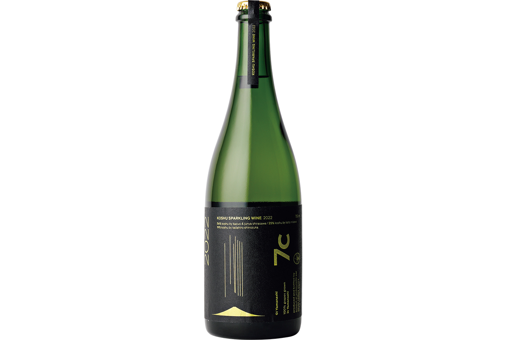
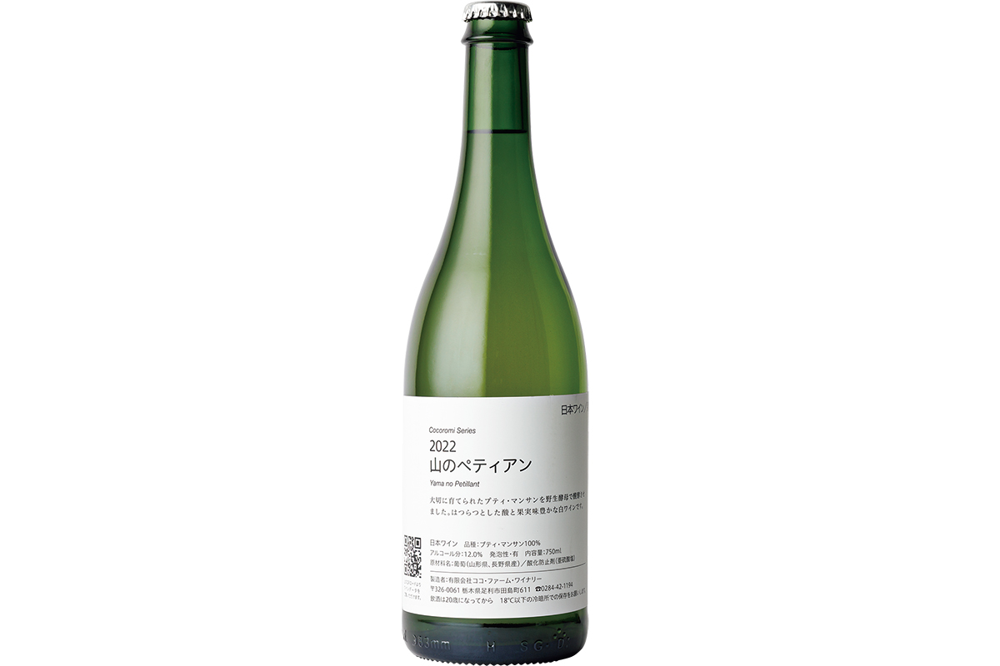
Красное The Trial Batch Co-ferment MPC 2021 от Zao Woody Farm из винограда префектуры Ямагата родилось как эксперимент: пти мансан, обычно белый сорт, сбродили вместе с мерло и каберне совиньоном. Вино сухое и лёгкое, его хорошо пить с летними овощами и рыбой. Красное «Макиути Мускат Бейли А Эстейт» 2023 года от Tsuno Wine из Миядзаки делают только из спелого винограда собственных виноградников. Фруктовый аромат, кислотность, танины и лёгкая солоноватость делают его вином к простому салату с маслом и солью или к блюдам на соевом соусе.
Оранжевое Just my imagination 2023 делает винодельня «Даймондо сюдзо» из Яманаси, и сотрудники IMADEYA сами участвовали в сборе винограда. В вино не добавляли ни кислоту, ни сахар, ни сульфиты, а бродило оно на диких дрожжах. Оранжевое ARUGA BRANCA DENSHO 2022 от «Кацунума дзёдзо» сделано из винограда косю и выдержано во французском дубе. Из всей подборки его интереснее всего пробовать при разной температуре.
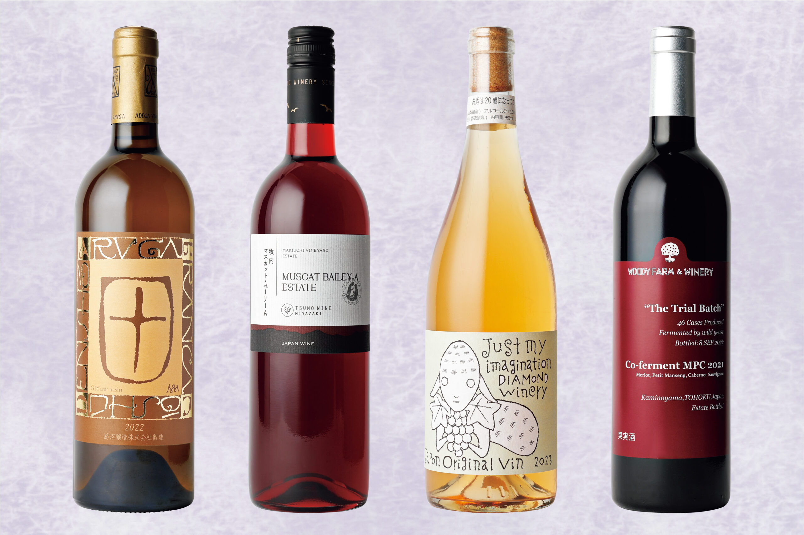
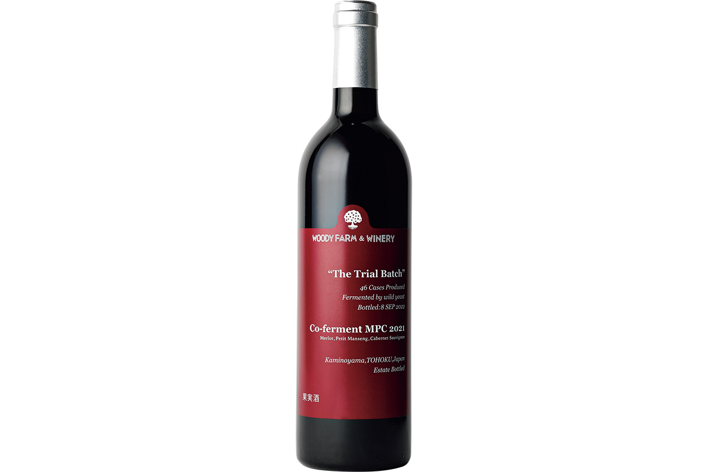
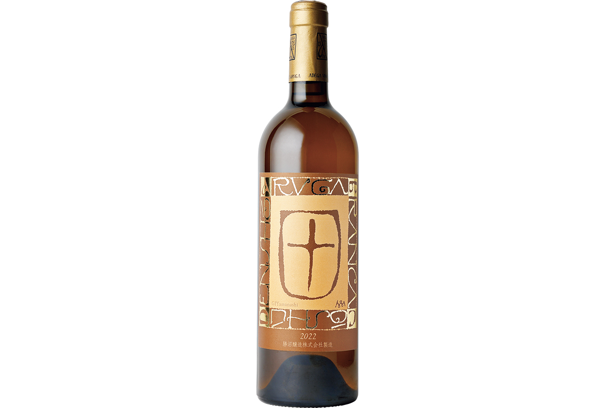
Фото: Норихито Судзуки.